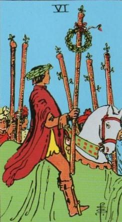
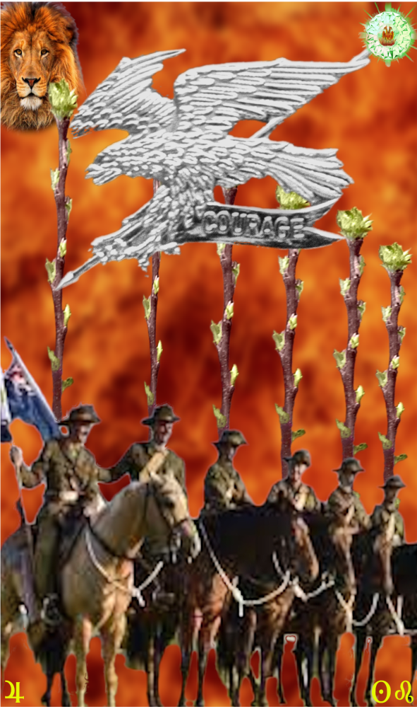
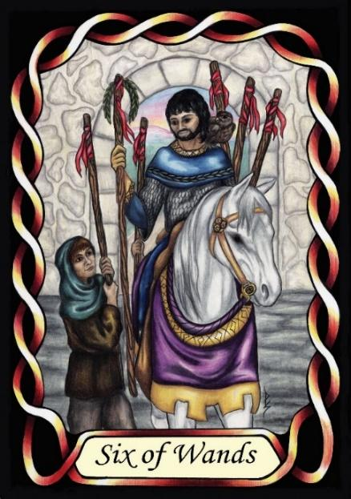

Six of Wands



Sign |
|
Five: True Path |
|
Sign Ruler |
|
Element |
Fire: change |
Modality |
|
Symbol |
Lion |
Decan |
|
Decan Ruler |
|
Time |
Aug 2 - 12 |
Courage Leo II
The Journeyman is a do-er, and will get done whatever is necessary. This presents as courage, represented as a willingness to risk the ultimate sacrifice, if necessary, if the outcome is worthwhile. These can be true heroes, earning medals for saving their fellow soldiers, sometimes posthumously. Unlike their earlier journeymen, they know how to see a job through to completion.
Goldschneider Personology
These Leos are capable of committing to projects and undertaKings, subjugating their ego for the greater good. However, sometimes the undertaKings are one side of conflict and battle. Generally, they are emotionally well balanced, but fare poorly when that balance is lost. They can be prone to depression.
RWS Imagery
Warriors, either riding to war, or returning home, victorious and wealthy.
Summary:
The Wands represents the Journeyman's courage, resilience, and willingness to take risks for a greater cause. With Jupiter's influence, they balance ego and humility, committing to projects and undertakings. Emotional balance is crucial, as they can be prone to depression when disrupted.